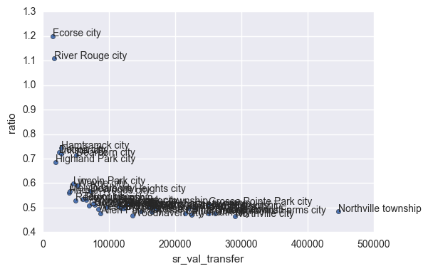

Fri 30 December 2016 | tags: Research, -- (permalink)
I am currently working with Bernadette Atuahene to study the illegality of property tax assessments in Detroit and other municipalities in Wayne County, Michigan. State law requires that assessments are set at exactly half the market value of a given property. With the collapse of the housing market in the mid-2000s, property values have fallen substantially faster than assessments, leaving many residents with inflated property tax bills. This is thought to be a major contributor to the on-going tax foreclosure crisis in Detroit. Bernadette has already found that assessments are widely set at illegal levels throughout Detroit and that owners of lower-value properties are disproportionately affected.
My work involves examining assessment ratios, i.e., the ratio of assessed values in a given year to sale price in the year prior for arm's-length sales, throughout the county. I collected assessment records for all propreties in Wayne County for 2013 through 2016, and I linked them to arm's-length sales for 2012 through 2015, using data from RealtyTrac. In this notebook, I show the relationship betweeen municipal-level assessment ratios and median sale price for residential properties included in calculating those ratios.
# import libraries
import sqlite3 as sql
import pandas as pd
import numpy as np
import time
import seaborn as sns
%matplotlib inline
I have already linked sales to assessment records, so I will here query a table containing records at the property level, and then group them by municipality.
db = "/home/eric/detroit_research_projects/data/derived_data/wayne_county_assessor.sqlite"
con = sql.connect(db)
qry = "SELECT * FROM ratios;"
df = pd.read_sql(qry, con, index_col="oid")
df.head()
| year | sr_val_transfer | adjsev | ratio | cousub | |
|---|---|---|---|---|---|
| oid | |||||
| 1581219 | 2013 | 107000.0 | 58300.0 | 0.545 | Trenton city |
| 1759778 | 2013 | 149900.0 | 67300.0 | 0.449 | Trenton city |
| 1878570 | 2013 | 90000.0 | 53500.0 | 0.594 | Trenton city |
| 1410151 | 2013 | 160000.0 | 73800.0 | 0.461 | Trenton city |
| 1399144 | 2013 | 90000.0 | 53300.0 | 0.592 | Trenton city |
Which municipalities have the largest median assessment ratios and sales prices?
# calculate overall median assessment ratio
meds = df.groupby("cousub")["ratio"].median()
meds = pd.DataFrame(meds)
meds.sort_values(by="ratio", ascending=False).head(10)
| ratio | |
|---|---|
| cousub | |
| Ecorse city | 1.2000 |
| River Rouge city | 1.1080 |
| Hamtramck city | 0.7430 |
| Detroit city | 0.7250 |
| Inkster city | 0.7210 |
| Dearborn city | 0.7140 |
| Highland Park city | 0.6865 |
| Lincoln Park city | 0.5985 |
| Wayne city | 0.5890 |
| Melvindale city | 0.5675 |
# calculate the overall median sale price and show the bottom values
meds = df.groupby("cousub")["sr_val_transfer"].median()
meds = pd.DataFrame(meds)
meds.sort_values(by="sr_val_transfer", ascending=True).head(10)
| sr_val_transfer | |
|---|---|
| cousub | |
| Ecorse city | 15000.0 |
| River Rouge city | 17000.0 |
| Highland Park city | 19250.0 |
| Detroit city | 24900.0 |
| Inkster city | 28000.0 |
| Hamtramck city | 28000.0 |
| Harper Woods city | 40000.0 |
| Melvindale city | 41250.0 |
| Lincoln Park city | 46050.0 |
| Redford township | 49900.0 |
We can see from the above truncated tables that several of the places with the highest assessment ratios are also among those with the lowest median sales prices, as expected. Let us now plot all places to explore this relationship.
newdf = df.groupby("cousub")[["sr_val_transfer", "ratio"]].median()
ax=newdf.plot(kind="scatter", x="sr_val_transfer", y="ratio")
ax.set_xlim(0,500000)
for i, point in newdf.iterrows():
ax.text(point['sr_val_transfer'], point['ratio'], i)

There is a clear "hockey stick" shape to this figure, with assessment ratios above 1.0 for the places with the lowest sale prices, but as sale prices increase, the points curve toward 0.5 and remain there as values increase. Follow this link for an interactive plot.